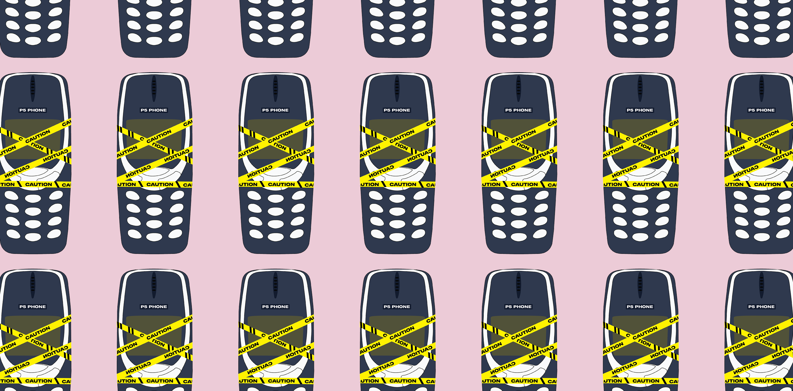

Designed for p5.js 2.x
<script
src="https://cdn.jsdelivr.net/npm/p5-phone@1.9.1/dist/p5-phone.min.js">
</script>
src/p5-phone.js.
Use p5.js, load p5-phone, lock gestures, then enable the capability your sketch needs from a user tap.
<script
src="https://cdn.jsdelivr.net/npm/p5-phone@1.9.1/dist/p5-phone.min.js">
</script>function setup() {
createCanvas(windowWidth, windowHeight);
lockGestures();
enableGyroTap('Tap to enable motion sensors');
}
function draw() {
background(245);
textAlign(CENTER, CENTER);
if (window.sensorsEnabled) {
circle(width / 2 + rotationY * 3, height / 2 + rotationX * 3, 60);
} else {
text('Tap to enable motion sensors', width / 2, height / 2);
}
}if (window.sensorsEnabled) { ... }, if (window.micEnabled) { ... }, or the matching status flag for the capability you enabled.
if (window.sensorsEnabled) {
circle(width / 2 + rotationY * 3, height / 2 + rotationX * 3, 60);
}if (window.micEnabled) {
let level = mic.getLevel();
circle(width / 2, height / 2, level * 500);
}function mousePressed() {
if (window.soundEnabled) {
mySound.play();
}
return false;
}if (window.nfcEnabled) {
if (isNfcTag('shirt')) {
drawShirtEffect();
}
}function mousePressed() {
if (window.vibrationEnabled) {
vibrate(50);
}
return false;
}if (cam.ready) {
cam.draw();
}mousePressed(), mouseDragged(), and mouseReleased() for touch or pointer input. The older touchStarted(), touchMoved(), and touchEnded() callbacks are p5.js 1.x only.
Grouped by the job you are trying to do. The permission table keeps the five UI styles visible, and each category lists the p5 APIs that become practical after p5-phone handles the mobile browser setup.
Reordered around starter sketches, input, output, ML5, and lower-priority comparison material. Each card has room for a full example, minimal version, Web Editor link, source link, and QR code.
Plan mobile sketches by platform first. Browser permissions and hardware support matter more than the p5.js version for most phone behavior.
mousePressed(), mouseDragged(), and mouseReleased() for touch-compatible sketches.vibrate().| Capability | iOS Safari | Android Chrome | Desktop browsers |
|---|---|---|---|
| Motion sensors | Supported after a tap permission flow. | Supported; permission request is usually a no-op. | Limited or unavailable on most laptops and desktops. |
| Touch input | Supported through touch and pointer events. | Supported through touch and pointer events. | Use mouse or pointer callbacks for testing. |
| Microphone and sound | Supported after user gesture and permission. | Supported after user gesture and permission. | Supported after browser permission. |
| Speech recognition | Browser support varies; test on the target device. | Supported in Chrome where Web Speech is available. | Browser support varies. |
| NFC | Not supported. | Supported in Chrome on HTTPS. | Not supported. |
| Camera and ML5 | Supported after camera permission. | Supported after camera permission. | Supported after camera permission. |
| Vibration | Not supported. | Supported on many phones. | Limited or unavailable. |